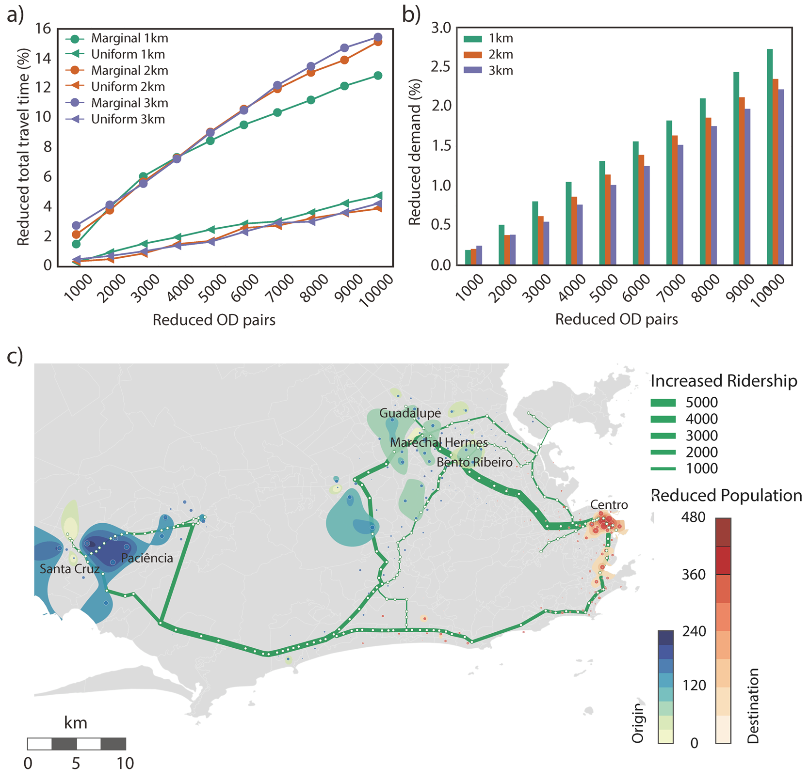

Postdoctoral Associate
HuMNet Lab
Department of City and Regional Planning,
UC Berkeley
I am a postdoctoral associate in Human Mobility and Networks (HuMNet) Lab at the Department of City and Regional Planning, UC Berkeley, supervised by Prof. Marta C. Gonzalez. Before comming to Berkeley, I was a postdoctoral associate at Department of Civil and Environmental Engineering, MIT from Sep. 2015 to Oct. 2018 in Marta’s group, a guest postdoctoral fellow in the Energy Analysis and Environmental Impacts Division, Lawrence Berkeley National Laboratory from Dec. 2017 to Oct. 2018. I got the Ph.D. in Department of Automation supervised by Prof. Yuncai Liu at Shanghai Jiao Tong University in 2015 and hold M.S. and B.S degrees in Shandong University.
My research is on human mobility and urban computing, with particular emphasis placed on the use of massive trajectory data in Intelligent Transportation Systems and Smart City from interdisciplinary perspective.
Nature Energy
Data Mining and Knowledge Discovery
IEEE Transactions on Mobile Computing
IEEE Transactions on Intelligent Transportation Systems
IEEE Transactions on Vehicular Technology
IEEE Intelligent Transportation Systems Magazine
IEEE Access
Computers, Environment and Urban Systems
Transportation Research Part C: Emerging Technologies
Transportmetrica A: Transport Science
Transportation Research Board Annual Meeting (ADC20)
 Figure: Travel demand management during Rio Olympics 2016.